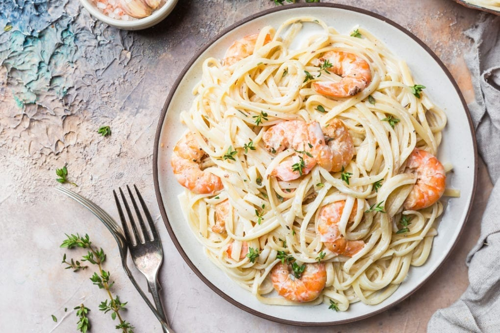

"Нептунова морска наслада" – синьо-зелена морска паста с морски дарове

Начин на проготвяне
- Сварете пастата в подсолена вода, отцедете и поръсете с олио, за да не залепне, и я оставете настрана. Скаридите и ракообразните се сваряват за кратко в малко вода, отцеждат се и се оставят да изстинат, а отцедената вода се оставя за основа за накисване.
- Панчетата се нарязва на тънки филийки и се запържва леко в тиган без мазнина, добавят се разполовените домати, сметаната, скаридите и мидите. Черен пипер и сол по желание.
- Разтопете маслото в тиган, добавете малко вода, в която са се варили скаридите и ракообразните и върху него загрейте пастата Добавете скаридите със сметана и мидите и разбъркайте внимателно.
- Добавете непочистени скариди и миди. Гответе всичко заедно още няколко минути и ястието е готово за сервиране. Сервирайте го топло и по желание поръсете с твърдо настъргано сирене.
Tази рецепта е вдъхновена от мистичните сини нюанси и водната природа на Нептун.
Уран

Факти
- Нептун е най-малката планета от останалите газови гиганти Юпитер, Сатурн и Уран. Той обаче е по-масивен от Уран с 18%. И тъй като е по-малък, но по-масивен, неговата плътност е по-голяма от тази на Уран.
- Нептун е най-ветровитата планета в Слънчевата система. Ураганните ветрове, бушуващи там, достигат невероятната скорост от 2 000 км/ч. Една от най-големите бури, наблюдавана някога на Нептун, е регистрирана през 1989 г. Тя е кръстена от учените на НАСА „Голямо тъмно петно“.
- Нептун е озарен в прекрасен синьо-зелен цвят. Това се дължи на неговата атмосфера – водород, хелий и малки количества метан. Именно метанът „поглъща“ червената светлина и озарява планетата в синьозелено.
- Нептун има 14 луни, кръстени на различни морски божества и нимфи от гръцката митология. Най-големият му спътник е Тритон.
- Денят на Нептун продължава 16 часа, за толкова време планетата се завърта около своята ос.
- Нептун не бил известен на древните, за разлика от много от другите планети в Слънчевата система. Планетата не може да се види с просто око, за пръв път е наблюдавана през 1846 г.
- Животът на Нептун е невъзможен, смятат учените. Но ако се озовете на планетата ще откриете нещо интересно – гравитацията на Нептун е почти същата като тази на Земята.
- Нептун е най-студената планета в Слънчевата система. Температурите там могат да паднат до -221 градуса. Всъщност на Плутон е още по-студено, но той беше разжалван от статута му на пълноценна планета и причислен към планетите джуджета.
- Една година на Нептун се равнява на 165 земни. За толкова време Нептун извършва пълна обиколка около Слънцето. С други думи, през юли 2011 година Нептун завърши първият си пълен оборот около Слънцето от момента на откриването му през 1846 година.